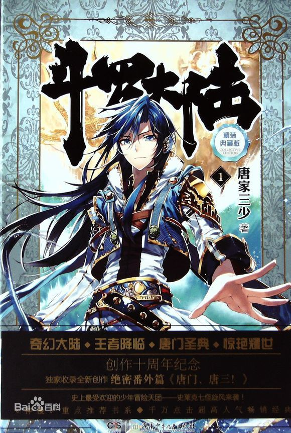

 《斗罗大陆》唐门外门弟子唐三，因偷学内门绝学为唐门所不容，跳崖明志时却发现没有死，反而以另外一个身份来到了另一个世界，一个属于武魂的世界，名叫斗罗大陆。这里没有魔法，没有斗气，没有武术，却有神奇的武魂。这里的每个人，在自己六岁的时候，都会在武魂殿中令武魂觉醒。武魂有动物，有植物，有器物，武魂可以辅助人们的日常生活。而其中一些特别出色的武魂却可以用来修炼并进行战斗，这个职业，是斗罗大陆上最为强大也是最荣耀的职业“魂师”。